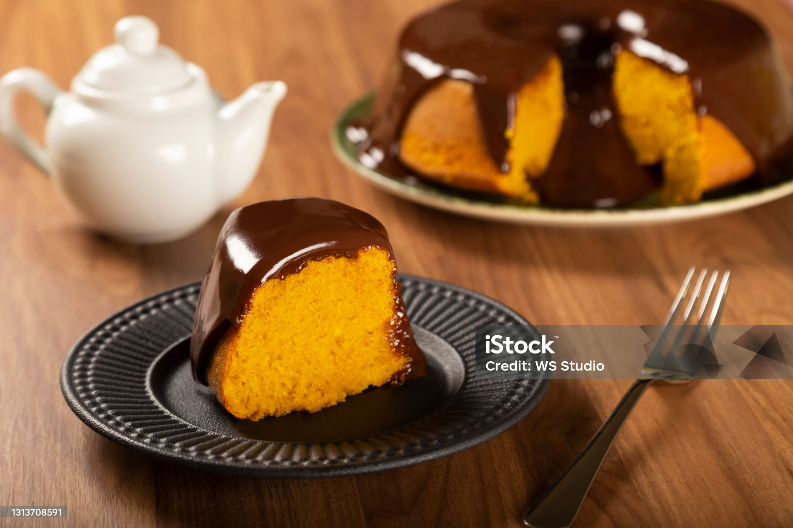

Para começar a fazer precisamos separar algumas coisas, como você, você é maneiro o suficiente
para fazer esse
bolo ultra maneiro?
Se sim pode prosseguir
Ingredientes bolo
3 cenouras médias (cerca de 300g), descascadas e picadas
3 ovos
2 xícaras de açúcar
2 xícaras de farinha de trigo
1 colher de sopa de fermento em pó
Ingredientes Corbetura
1 xícara de açúcar
7 colheres de sopa de leite
3 colheres de sopa de achocolatado em pó
1 colher de sopa de manteiga
Modo de preparo
Preaqueça o forno a 180°C e unte uma forma média com margarina e farinha de trigo.
No liquidificador, bata as cenouras picadas, os ovos e o óleo até obter uma mistura homogênea.
Em uma tigela, misture o açúcar e a farinha de trigo. Adicione a mistura do liquidificador e mexa bem.
Acrescente o fermento em pó e misture delicadamente até incorporar à massa.
Despeje a massa na forma untada e leve ao forno preaquecido por aproximadamente 40 minutos, ou até que
esteja dourado e ao enfiar um palito, ele saia limpo.
Enquanto o bolo assa, prepare a cobertura: em uma panela, misture o açúcar, o leite, o achocolatado em pó e
a manteiga. Leve ao fogo médio, mexendo sempre, até ferver e engrossar um pouco.
Após retirar o bolo do forno e ainda quente, despeje a cobertura sobre ele, espalhando bem.
Deixe esfriar um pouco antes de servir.

É essa a receita, agora delicie-se com esse bolo maneirissimo de cenoura!!!!